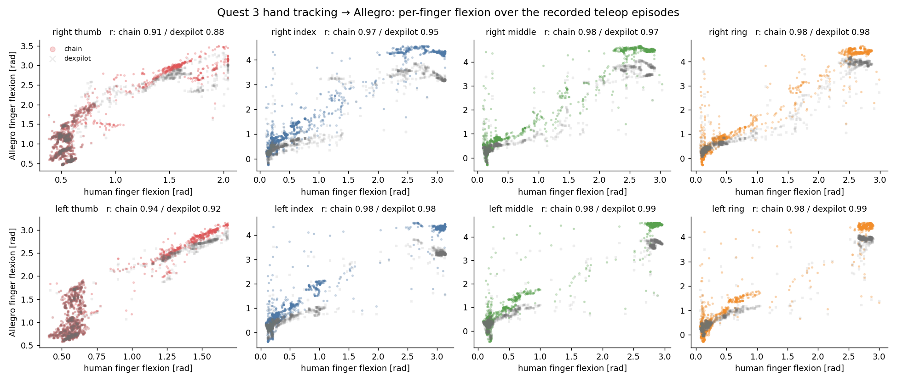

The operator wears a Meta Quest 3 and sees the simulated dual-arm cell in stereo from the robot's head. Both UR3 arms follow the operator's wrists and both 16-DoF Allegro hands follow their fingers, while every step is recorded as a demonstration for imitation learning.
A recorded episode replayed through the retargeter: the tracked human hand on the left of each row, the Allegro at the retargeted joint angles on the right (top: right hand, bottom: left hand).
5 200 tracked frames per hand. Pearson r between the operator's finger flexion and the Allegro finger's summed flexion joints:
| profile / hand | thumb | index | middle | ring | Allegro index flexion (P2–P98) |
|---|---|---|---|---|---|
| dexpilot (fingertips only), right | 0.88 | 0.95 | 0.97 | 0.98 | 0.1 – 3.7 rad |
| dexpilot (fingertips only), left | 0.92 | 0.98 | 0.99 | 0.99 | −0.1 – 3.5 rad |
| chain (default), left | 0.94 | 0.98 | 0.98 | 0.98 | −0.2 – 4.4 rad |
| chain (default), right | 0.91 | 0.97 | 0.98 | 0.98 | 0.1 – 4.5 rad |
Both follow flexion monotonically; the chain profile also reaches full closure (~4.5 rad) where the fingertip-only objective stops near 3.5–4 rad. This measures agreement with the operator's hand, not grasp success.

git clone https://github.com/ismael-esp/quest3-dexterous-teleop.git && cd quest3-dexterous-teleop conda activate env_isaaclab # Isaac Lab 2.3 / Isaac Sim 5.1 pip install -r requirements-isaac.txt scripts/download_assets.sh && scripts/setup_cloudxr_env.sh scripts/cloudxr_service.sh # terminal 1, then connect the headset GPU=0 DEVICE=cpu scripts/run_cloudxr_teleop.sh --object rod # terminal 2: A start, F finish, S/N/D label
No headset? scripts/run_teleop.sh --fake_vr --auto_engage --steps 600 runs a scripted episode end to end.